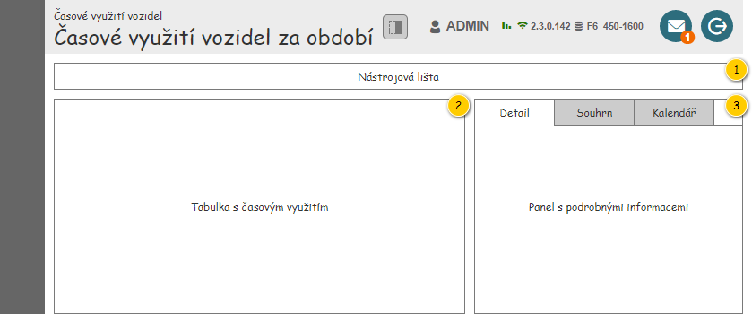
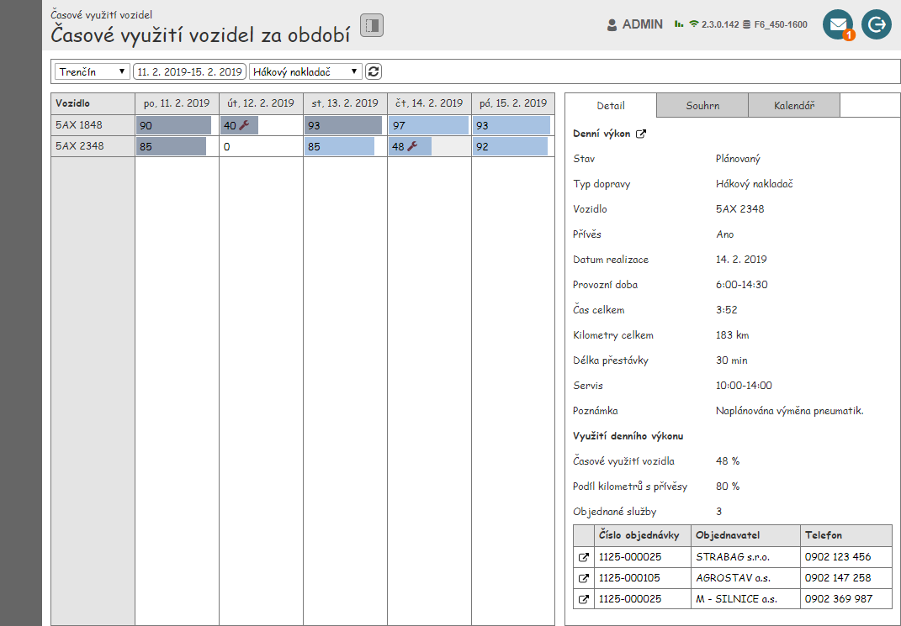
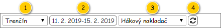
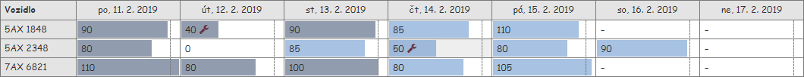
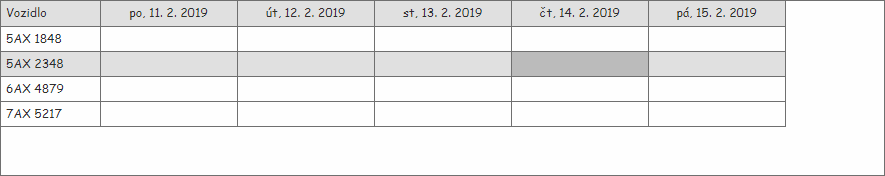

Stručný popis
Obrazovka slouží k zobrazení časového využití vozidla za zadané období.
Množina vstupních dat vychází z položek umístěných v nástrojové liště obrazovky.
Uživatelské rozhraní
Nejdříve je zobrazena struktura obrazovky spolu s náhledem, následně jsou jednotlivé části postupně popsány.
Hlavička obsahuje tlačítko umožňující skrytí panelu s podrobnými informacemi – chování a parametry tlačítka jsou následující:
- Komponenta: ToggleButton.
- Ikona: ra-panel-top (otočená o 90°).
- Chování:
- Stisknutí tlačítka provede skrytí/zobrazení panelu.
- Pokud je tlačítko stisknuto, je panel zobrazen, jinak je panel skryt.
- Výchozí stav: nestisknuto.
TODO: Vložit použité barvy na jedno společné místo.
Rozložení
Drátový diagram

Přehled UI komponent
| Callout | Skupina |
|---|---|
| 1 | Nástrojová lišta |
| 2 | Tabulka s časovým využitím |
| 3 | Panel s podrobnými informacemi |
Náhled
Dále je uveden drátový diagram s náhledem celé obrazovky.

Nástrojová lišta
Výchozí hodnoty nastavené v nástrojové liště jsou uvedeny v jejím popisu. Následně si již Systém pamatuje, jaké parametry uživatel nastavil, a při dalším zobrazení obrazovky tyto parametry předvyplní.
Drátový diagram

Přehled UI komponent
| Callout | Komponenta | Nadpis | Typ komponenty | Příklad hodnoty | Hodnota | Výchozí hodnota | Formát | Zpřístupněná | Viditelná | Chování | Validace | Poznámka |
|---|---|---|---|---|---|---|---|---|---|---|---|---|
| 1 | Výběr provozovny | – | ComboBox | Provozovna Trenčín | Entita Provozovna. Dostupné jsou takové Provozovny, které splňují zároveň všechny uvedené podmínky:
| V pořadí první uživateli dostupná Provozovna. | Vždy | Vždy | Po výběru Provozovna se načtou odpovídající Denní výkony – viz Načtení denních výkonů. | – | – | |
| 2 | Výběr období | – | Button | 11. 2. 2019-15. 2. 2019 | Jedná se o výstup nabídky pro nastavení období – položky Datum od, Datum do. | Aktuální týden. | Vždy | Vždy | Po stisknutí tlačítka se zobrazí kontextová nabídka pro výběr období po dnech – viz Výběr období po dnech. V nabídce je zobrazen aktuálně nastavený den. Po výběru období se načtou odpovídající Denní výkony – viz Načtení denních výkonů. | – | – | |
| 3 | Výběr typu dopravy | – | ComboBox | Hákový nakladač | Entita Typ dopravy. Kromě možnosti Nevybráno (zobrazena jako v pořadí první položka) jsou k dispozici všechny takové Typy dopravy, u kterých je hodnota atribut Je k dispozici nastavena na TRUE. | Nevybráno. | Pokud se jedná o možnost nevybráno, je zobrazen text Nevybráno. | Vždy | Vždy | Po výběru Typu dopravy se načtou odpovídající Denní výkony – viz Načtení denních výkonů. | – | – |
| 4 | Obnovení dat | – | Button
| – | – | – | – | Vždy | Vždy | Po stisknutí tlačítka se načtou odpovídající Denní výkony – viz Načtení denních výkonů. | – | – |
Chování
Načtení denních výkonů
Pokud dojde k situaci, kdy mají být načteny Denní výkony, je nutné nejprve vyhodnotit, zda jsou dostupná všechna vstupní data – žádná z dále uvedených hodnot kromě Typu dopravy není NULL. Pokud jsou vstupní data k dispozici, je spuštěn , na vstup jsou jsou pak předány následující hodnoty:
- Provozovna: Provozovna zvolená v nástrojové liště.
- Období: období zvolené v nástrojové liště (Datum od-Datum do).
- Typ dopravy: Typ dopravy zvolený v nástrojové liště (pokud je zvolena možnost Nevybráno, je předáno NULL).
Pokud máme k dispozici Denní výkony, můžeme je zobrazit v tabulce a následně získat souhrnné hodnoty – je spuštěn 203UC07: Získat souhrnné informace o denních výkonech, na vstup jsou pak předány následující hodnoty:
- Denní výkony: Denní výkony načtené v předcházejícím kroku.
Pokud Denní výkony k dispozici nejsou (na výstupu bylo předáno NULL), souhrnné hodnoty získávány nejsou, tomu pak odpovídá i jejich zobrazení.
Pokud dojde k načtení Denních výkonů, Systém zruší zruší výběr buňky, pokud byla před načtením některá vybrána.
Tabulka s časovým využitím
První sloupec tabulky, jak je vidět z dále uvedeného obrázku, je pevně daný a obsahuje identifikaci konkrétního Vozidla. Následující sloupce se však odvíjí od délky nastaveného období v Nástrojové liště. Jejich počet odpovídá délce zvoleného období, přičemž jsou jednotlivé sloupce vkládány ve vzestupném pořadí dle konkrétního data. Jednotlivé Denní výkony jsou klíčovány dle atributů Vozidlo a Datum realizace a následně vkládány do odpovídající buňky tabulky.
Poznámka: Pokud nebyl získán žádný Denní výkon, je zobrazena prázdná tabulka (je zobrazen jak sloupec Vozidlo, tak sloupce představující zvolené období).
Tabulka je ve výchozím stavu řazena vzestupně dle sloupce Vozidlo.
Drátový diagram

Přehled UI komponent
| Sloupec | Nadpis | Typ komponenty | Příklad hodnoty | Hodnota | Výchozí hodnota | Formát | Možnosti sloupce | Zpřístupněná | Viditelná | Chování | Validace | Poznámka |
|---|---|---|---|---|---|---|---|---|---|---|---|---|
| Vozidlo | Vozidlo | TextBox | 5AX 2348 | Entita Denní výkon. | – | Pokud není hodnota k dispozici a zároveň je k Dennímu výkonu přiřazeno Vozidlo (atribut Vozidlo), je zobrazen zástupný text: licensePlatePlaceholderText, viz Konfigurační hodnoty. |
| Nikdy | Vždy | – | – | – |
| Diagram časového využití | Odpovídající den zobrazeného období.
| TextBox | 95 | Entita Denní výkon. | – | Získání časového využití vozidla
Pokud není k odpovídajícímu datu realizace dostupný Denní výkon, není hodnota ani barevný pruh zobrazen vůbec. Pokud jsou u Denního výkonu splněny zároveň všechny uvedené podmínky, je místo hodnoty zobrazen zástupný text: – (ALT+0150).
|
| Nikdy | Vždy | Zobrazení diagramu časového využití Pokud je k odpovídajícímu Vozidlu dostupný Denní výkonu a je v něm obsažen alespoň jeden Interval omezení denního výkonu typu Alokace na servis, je zobrazena ikona:
Ikona je v rámci buňky zarovnána za hodnotou. | – | Sloupec je zobrazen pro každý den zobrazeného období. |
Chování
Získání časového využití vozidla
Pokud je k dispozici Denní výkon, odpovídá zobrazená hodnota jeho stavu (atribut Stav):
- Pokud je Denní výkon, který je v rámci řádku zobrazen, ve stavu Uzavřený (atribut Stav):
- atribut Časové využití entity Realizace denního výkonu – takové Realizace denního výkonu, u které hodnota atributu Denní výkon odpovídá Dennímu výkonu, který je v řádku zobrazen (poznámka: v tomto případě by měla Realizace denního výkonu vždy existovat).
- Jinak:
- atribut Časové využití entity Denní výkon, která je v řádku zobrazena.
Jinak není hodnota předána a následně tedy ani zobrazena.
Zobrazení diagramu časového využití
Diagram časového využití je zobrazen na pozadí buňky jako barevný pruh, který představuje poměrnou část mezi časovým využitím konkrétního Denního výkonu a mezním časovým využitím.
Mezní hodnota časového využití je získána následovně:
- Pokud žádný z načtených Denních výkonů nemá hodnotu časového využití vyšší než 100, je mezní hodnota nastavena na 100.
- Jinak je mezní hodnota získána jako maximum časového využití všech načtených Denních výkonů – mezní hodnota je tedy získána z takového Denního výkonu, který má nejvyšší hodnotu časového využití (atribut Časové využití).
Pokud je mezní hodnota časového využití vyšší než 100, je v digramu naznačena svislá přerušovaná čára, a to na úrovni hodnoty 100, jak je naznačeno na dříve uvedeném obrázku.
- Přerušovaná čára je vykreslena následující barvou: #d3d3d3.
Rozmezí hodnot v rámci buňky je tedy dáno dvěma krajními hodnotami – 0 a nalezená mezní hodnota. Od tohoto intervalu se pak odvíjí délka jednotlivých barevných pruhů.
Barva pruhu je pak rozlišena dle stavu konkrétního Denního výkonu (konkrétní barvy jsou uvedeny samostatně – viz Použité barvy a ikony):
- Uzavřený: Časové využití/Skutečnost (světlá),
- Jinak: Časové využití/Plán (světlá).
Označená buňka
Pro zvýšení přehlednosti v rámci tabulky dojde při výběru buňky k zvýraznění celého odpovídajícího řádku – viz obrázek.

| Callout | Popis | Barva |
|---|---|---|
| 1 | Podbarvení buňky, která je právě označena. | #C2C2C2 |
| 2 | Podbarvení buněk řádku, ve kterém se vyskytuje označená buňka. | #E4E4E4 |
Poznámka:
- Obrázek je pro přehlednost výrazně zjednodušen
- Obrázek naznačuje požadované obarvení jednotlivých buněk, které se může lišit od ostatních drátových diagramů.
Zobrazené sloupce nevyplní celou šířku tabulky
Při použití monitoru s menším rozlišením, případně při nastavení velmi krátkého období, může dojít k tomu, že vložené sloupce nevyplní celý prostor, který je pro tabulku k dispozici. Není tedy požadováno, aby sloupce vyplnily celou šířku tabulky – viz obrázek.

Panel s podrobnými informacemi
Panel s podrobnými informacemi obsahuje tři karty, a to v uvedeném pořadí:
- Detail – podrobné informace o Denním výkonu.
- Souhrn – souhrnné informace o načtených Denních výkonech.
- Kalendář – Denní výkony zvoleného vozidla za zadané období.
Detail
Panel s detailem Denního výkonu je popsán v samostatném dokumentu – viz 200UI04: Detail denního výkonu – detail. Na vstup je pak předán právě označený Denní výkon.
Poznámka: Pokud není označena žádná buňka tabulky, případně označená buňka nemá přiřazen žádný Denní výkon, je předáno NULL.
Souhrn
Panel se souhrnnými informacemi o načtených Denních výkonech je popsán v samostatném dokumentu – viz 200UI14: Podrobné informace k časovému využití vozidel – Souhrn. Na vstup je pak předána kolekce Denních výkonů, které jsou právě načteny. Pokud není žádný Denní výkon k dispozici (v rámci Načtení denních výkonů bylo vráceno NULL), je předáno NULL.
Poznámka: V rámci příprav tohoto panelu je volán 203UC07: Získat souhrnné informace o denních výkonech, který je ale volán i při Načtení denních výkonů. Volání tedy stačí provést pouze jednou – je předána stejná sada Denních výkonů – a data použít pro více skupin této obrazovky.
Kalendář
Panel s kalendářem Denních výkonů je popsán v samostatném dokumentu – viz 200UI14: Podrobné informace k časovému využití vozidel – Kalendář. Na vstup je pak předán právě označený Denní výkon.
Poznámka: Pokud není označena žádná buňka tabulky, případně označená buňka nemá přiřazen žádný Denní výkon, je předáno NULL.
Grafický návrh
Revize
31. 8. 2023: Tomáš Nadrchal
| Odkaz | Stručný popis změny/doplnění |
|---|---|
| Nástrojová lišta | Revize dostupných provozoven (naznačeno modře). |
3. 3. 2023: Tomáš Nadrchal
| Odkaz | Stručný popis změny/doplnění |
|---|---|
| Nástrojová lišta | Omezení dostupných typů dopravy (naznačeno modře). |
13. 11. 2019: Tomáš Nadrchal
| Odkaz | Stručný popis změny/doplnění |
|---|---|
| Zobrazení diagramu časového využití | Doplněna chybějící barva přerušované čáry naznačující hranici 100 % (naznačeno modře). |
14. 10. 2019: Tomáš Nadrchal
| Odkaz | Stručný popis změny/doplnění |
|---|---|
| Tabulka s časovým využitím | Změněn zdroj hodnoty pro zobrazení SPZ odpovídajícího Vozidla (naznačeno modře). |
13. 7. 2019: Tomáš Nadrchal
| Odkaz | Stručný popis změny/doplnění |
|---|---|
| Zobrazení diagramu časového využití | Aktualizovány barvy pro vykreslení diagramu časového využití (naznačeno modře). |
30. 6. 2019: Tomáš Nadrchal
Jedná se o změny, které proběhnou v rámci M9.
| Odkaz | Stručný popis změny/doplnění |
|---|---|
| Tabulka s časovým využitím | Aktualizovány použité ikony (naznačeno modře). |
21. 6. 2019: Tomáš Nadrchal
| Odkaz | Stručný popis změny/doplnění |
|---|---|
| Nástrojová lišta | Aktualizován popis dostupných Provozoven v nástrojové liště (komponenta 1, naznačeno modře). |
13. 6. 2019: Tomáš Nadrchal
Provedené změny korespondují s akceptačními testy pro M6 (potřebná data jsou k dispozici až v rámci M8) – bude zobrazováno využití Vozidla podle toho, zda jsou již k dispozici data ze skutečného provozu (z GPS jednotky).
| Odkaz | Stručný popis změny/doplnění |
|---|---|
| Tabulka s časovým využitím | Aktualizován především popis chování pro získání zobrazených hodnot (naznačeno modře). |
| Zobrazení diagramu časového využití | Aktualizován popis vykreslení časového využití v diagramu (naznačeno modře). |
| Diagram | Použit detail Denního výkonu, který byl vytvořen v rámci M8 (naznačeno modře). |
8. 6. 2019: Tomáš Nadrchal
| Odkaz | Stručný popis změny/doplnění |
|---|---|
| Tabulka s časovým využitím | Doplněn popis dostupných funkcí pro práci s jednotlivými sloupci. |
30. 4. 2019: Tomáš Nadrchal
| Odkaz | Stručný popis změny/doplnění |
|---|---|
| Přehled UI komponent | Doplněna informace o zarovnání nadpisu pro sloupce s Diagramy časového využití. |
| Označená buňka | Doplněn popis, jakým způsobem má být zvýrazněna označená buňka. |
| Zobrazené sloupce nevyplní celou šířku tabulky | Doplněn popis, jakým způsobem vykreslit tabulku, pokud sloupce nevyplní celou její šířku. |
10. 4. 2019: Tomáš Nadrchal
| Odkaz | Stručný popis změny/doplnění |
|---|---|
| Opraveny barvy pro diagram časového využití. |
1. 4. 2019: Tomáš Nadrchal
| Odkaz | Stručný popis změny/doplnění |
|---|---|
| Nástrojová lišta | Doplněna informace o pamatování si hodnot zadaných uživatelem v nástrojové liště. |
| Tabulka s časovým využitím | Aktualizována poznámka, jaké informace jsou v tabulce zobrazeny v případě, že není načten žádný Denní výkon. |